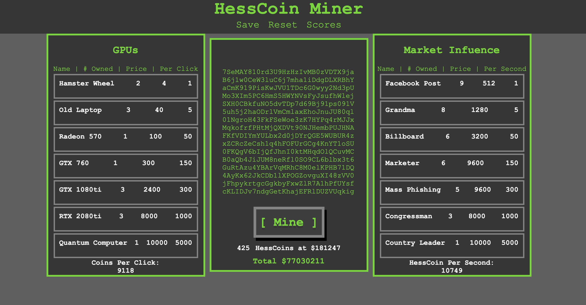

HessCoin
Check it out!Summary
This site is a clicker game where the user clicks mine to gain one HessCoin. The user can also buy upgrades to either increase the number of HessCoins a click, or to increase the value of HessCoins per second. This game scales infinitely with the user's goal to get the most money. He can compare his score to the scores of others.
About
This project was my web development's term project. I was assigned a
team of two others to create anything. We were also tasked with implementing
some sort of MongoDB database to incorporate with our website. We named the
fake virtual coin after our awesome professor and I designed a
template of what the site would look like with Google Slides. (Not the
best I know but I could easily work with team members with it) I worked
mostly on the front-end javascript for the logic of the game. I also
worked on the HTML, CSS, and back-end storage of scores.
If we were to expand the game we would do a design overhaul to make it
look more modern as well as adding responsiveness for mobile play. The
game play scaling could also be tuned for more consistent gameplay.